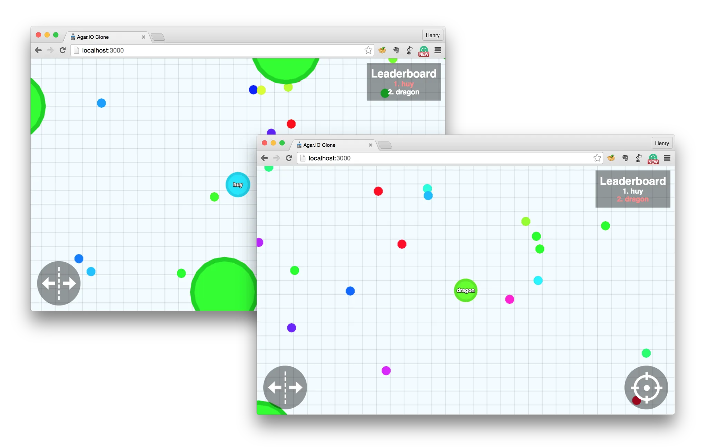

MAX Agar

作品简介
《MAX Agar》是一款多人在线球球竞技游戏。你将操控一颗小球进入竞技场，不断吞食散落的食物豆长大，再去吞噬比自己小的对手，一步步登上排行榜首。体型越大移动越慢，还要提防绿色病毒刺球——大球碰上它会被炸成一地碎片。游戏支持多人实时联机对战，自带排行榜与聊天室，叫上朋友开一局，看谁能活到最后。
核心玩法
- 吃豆成长 - 吞食场上不断刷新的彩色食物豆，体型随之长大；长大后移速变慢，需要更谨慎地走位。
- 大鱼吃小鱼 - 只要你的球比对手大，就能把对方整个吞掉；反过来也要躲开比你大的球。
- 分裂突袭 - 按空格把自己分裂成多个小球向前扑出，出其不意地吞掉远处的对手（最多分裂 16 个），但分裂后每个分身都很脆弱。
- 吐球喂食 - 按 W 吐出孢子喂队友，也可以把病毒刺球喂大、推向敌人。
- 病毒刺球 - 绿色刺球是小球的掩体：小球可以躲在后面不被大球吞食；大球撞上刺球则会爆裂成许多小块。
- 实时排行榜 - 右上角实时显示全场最大的玩家，冲榜就是这款游戏的终极目标。
操作说明
- 移动：移动鼠标，小球会跟随鼠标方向前进；也可以用方向键控制。
- 分裂：按 空格 向前方分裂扑出。
- 吐孢子：按 W 向外吐出一个孢子。
- 聊天：按 回车 打开聊天输入，和同场玩家交流。
- 移动端：支持触屏操作，拖动控制方向，屏幕按钮分裂 / 吐球。
其他信息
游戏类型： 网页多人在线竞技
竞技场大小： 5000 × 5000
运行方式： 浏览器直接打开，无需下载安装
游玩处
直接在下面开玩，也可以 全屏打开。小提示：昵称只支持英文和数字；多人联机游戏，和朋友约好同一时间进场就能碰到一起。
返回 作品集